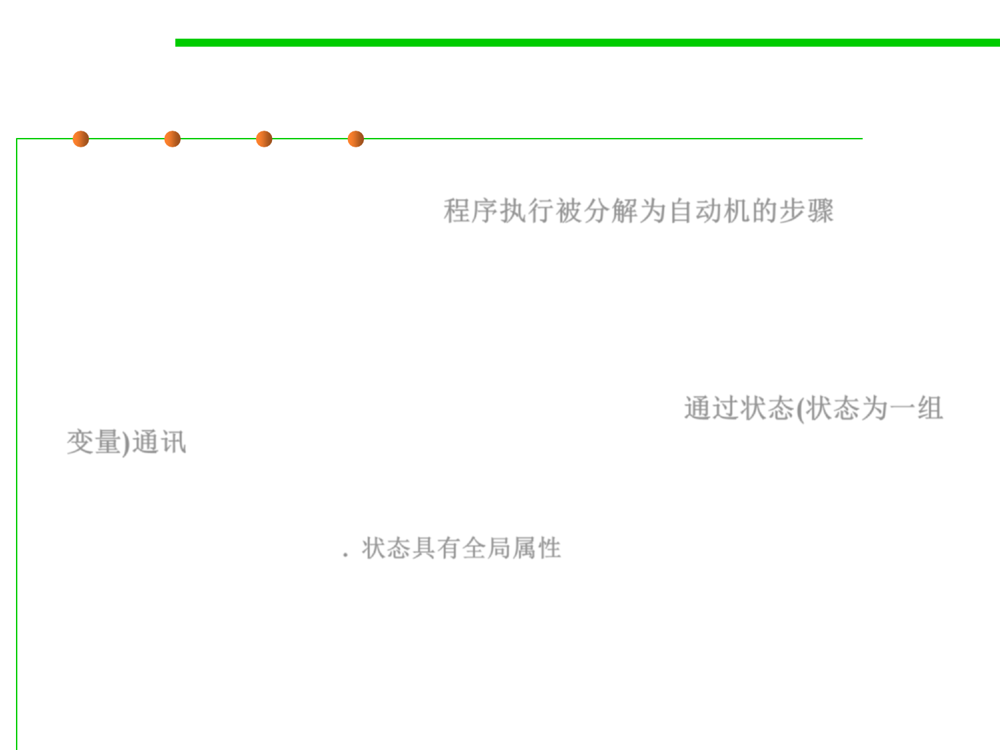

6.3 Maintainability-Oriented Construction Techniques
Automata-based programming
▪ The time period of the program‘s execution is clearly separated down
to the steps of the automaton. 程序执行被分解为自动机的步骤
– Each of the steps is effectively an execution of a code section (same for all the
steps), which has a single entry point.
– Such a section can be a function or other routine, or just a cycle body.
▪ Any communication between the steps is only possible via the
explicitly noted set of variables named the state. 通过状态(状态为一组
变量)通讯
– Between any two steps, the program can not have implicit components of its
state, such as local (stack) variables‘ values, return addresses, the current
instruction pointer, etc. 状态具有全局属性
– The state of the whole program, taken at any two moments of entering the step
of the automaton, can only differ in the values of the variables being
considered as the state of the automaton.
▪ The whole execution of the automata-based code is a (possibly
explicit) cycle of the automaton's steps.